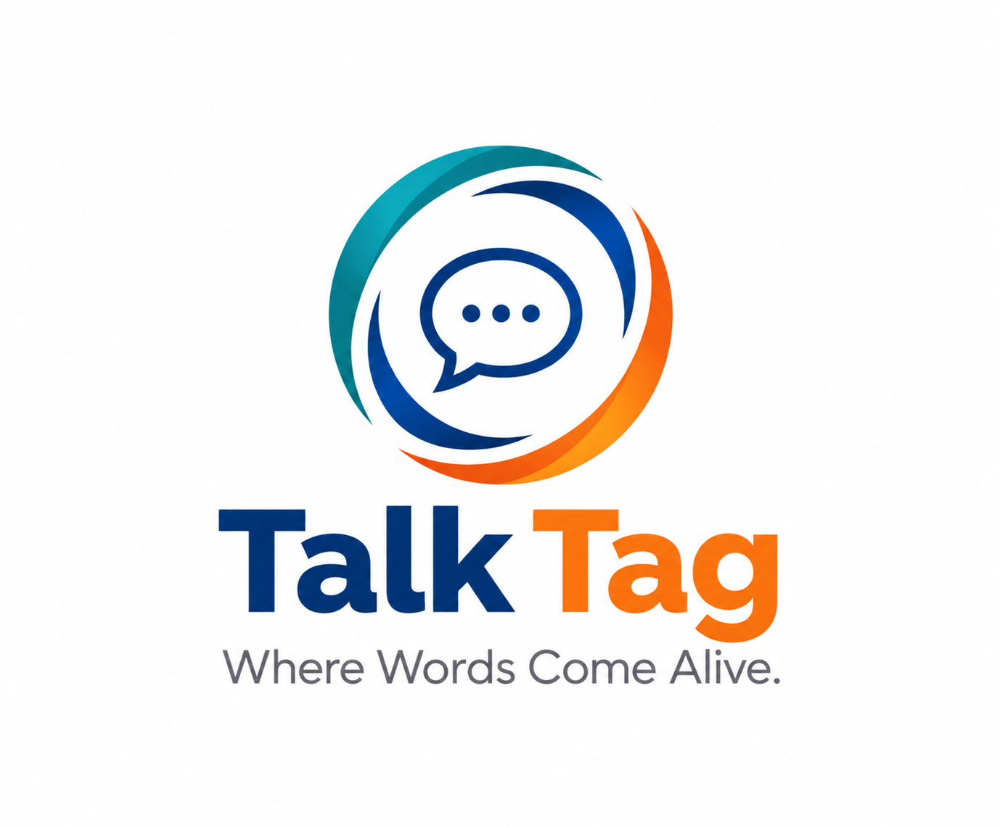

INPUT ↔ OUTPUTSOUND
Sound Check
Hear useful Korean, then bring it back in your own voice.

Two languages.Welcome to TalkTag, where words come alive. We listen, repeat, and build one chunk at a time—one today, another tomorrow. That’s what we call the Snowballing Drill.
Listen, speak, read, and make Korean your own—one small piece at a time.
Hear useful Korean, then bring it back in your own voice.
Build a whole story through sound, then tell it in your own words.
Explore the A1–C2 reading path. Korean reading lessons are in preparation.
Explore levelsRead, recall, and retell in your own words.